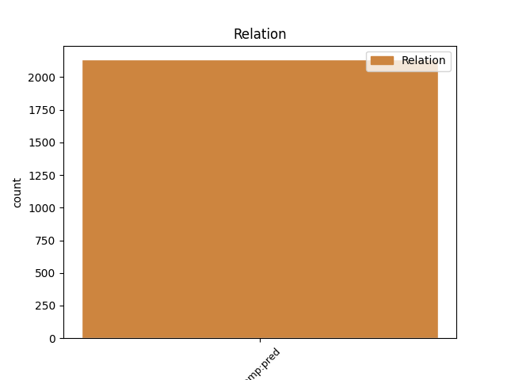
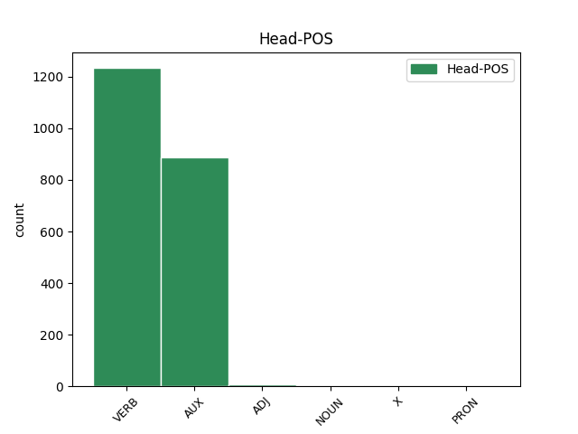
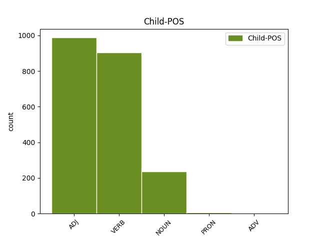

Distribution of features within this leaf



Agreement Rules sorted by frequency.
- When the dependent token is the predicative complements(comp:pred) of the head token, and the dependent token is VERB.
1 Hetta _ _ _ _ 0 _ _ _
2 er _ _ _ _ 0 _ _ _
3 ein _ _ _ _ 0 _ _ _
4 tvey _ _ _ _ 0 _ _ _
5 ára _ _ _ _ 0 _ _ _
6 útbúgving _ _ _ _ 0 _ _ _
7 , _ _ _ _ 0 _ _ _
8 sum _ _ _ _ 0 _ _ _
9 er _ _ _ _ 0 _ _ _
10 býtt _ _ _ _ 0 _ _ _
11 upp _ _ _ _ 0 _ _ _
12 í _ _ _ _ 0 _ _ _
13 fýra _ _ _ _ 0 _ _ _
14 semestur _ _ _ _ 0 _ _ _
15 , _ _ _ _ 0 _ _ _
16 har _ _ _ _ 0 _ _ _
17 møguleiki _ _ _ _ 0 _ _ _
18 er vere AUX _ Mood=Ind|Tense=Pres|VerbForm=Fin 0 _ _ _
19 at _ _ _ _ 0 _ _ _
20 nema _ _ _ _ 0 _ _ _
21 sær sære VERB _ Mood=Ind|Tense=Pres|VerbForm=Fin 18 comp:pred _ _
22 kunnleika _ _ _ _ 0 _ _ _
23 í _ _ _ _ 0 _ _ _
24 uppmáting _ _ _ _ 0 _ _ _
25 , _ _ _ _ 0 _ _ _
26 viðgerð _ _ _ _ 0 _ _ _
27 av _ _ _ _ 0 _ _ _
28 uppmátingardáta _ _ _ _ 0 _ _ _
29 , _ _ _ _ 0 _ _ _
30 og _ _ _ _ 0 _ _ _
31 fyriskipan _ _ _ _ 0 _ _ _
32 og _ _ _ _ 0 _ _ _
33 stýring _ _ _ _ 0 _ _ _
34 av _ _ _ _ 0 _ _ _
35 byggiprojektum _ _ _ _ 0 _ _ _
36 . _ _ _ _ 0 _ _ _
1 Sama _ _ _ _ 0 _ _ _
2 váttan _ _ _ _ 0 _ _ _
3 , _ _ _ _ 0 _ _ _
4 sum _ _ _ _ 0 _ _ _
5 var vere VERB _ Mood=Ind|Number=Sing|Person=3|Tense=Past|VerbForm=Fin|Voice=Act 0 _ _ _
6 brúkt brúkt ADJ _ Aspect=Perf|Case=Nom|Gender=Neut|Number=Sing|Strength=Strong|Tense=Past|VerbForm=Part|Voice=Pass 5 comp:pred _ _
7 av _ _ _ _ 0 _ _ _
8 sýnsmonnunum _ _ _ _ 0 _ _ _
9 síðsta _ _ _ _ 0 _ _ _
10 ár _ _ _ _ 0 _ _ _
11 , _ _ _ _ 0 _ _ _
12 verður _ _ _ _ 0 _ _ _
13 brúkt _ _ _ _ 0 _ _ _
14 aftur _ _ _ _ 0 _ _ _
15 í _ _ _ _ 0 _ _ _
16 ár _ _ _ _ 0 _ _ _
17 . _ _ _ _ 0 _ _ _
1 Viðkomandi _ _ _ _ 0 _ _ _
2 visti _ _ _ _ 0 _ _ _
3 , _ _ _ _ 0 _ _ _
4 tá _ _ _ _ 0 _ _ _
5 hann _ _ _ _ 0 _ _ _
6 var vere VERB _ Mood=Ind|Number=Sing|Person=3|Tense=Past|VerbForm=Fin|Voice=Act 0 _ _ _
7 settur settur NOUN _ Aspect=Perf|Case=Nom|Gender=Masc|Number=Sing|Strength=Strong|Tense=Past|VerbForm=Part|Voice=Pass 6 comp:pred _ _
8 í _ _ _ _ 0 _ _ _
9 starvið _ _ _ _ 0 _ _ _
10 , _ _ _ _ 0 _ _ _
11 at _ _ _ _ 0 _ _ _
12 talan _ _ _ _ 0 _ _ _
13 var _ _ _ _ 0 _ _ _
14 um _ _ _ _ 0 _ _ _
15 áramálssetan _ _ _ _ 0 _ _ _
16 . _ _ _ _ 0 _ _ _
1 Vert _ _ _ _ 0 _ _ _
2 var vere AUX _ Mood=Ind|Number=Sing|Person=3|Tense=Past|VerbForm=Fin|Voice=Act 0 _ _ _
3 eisini eisini PRON _ Mood=Opt|Number=Sing|Person=3|Tense=Past|VerbForm=Fin|Voice=Act 2 comp:pred _ _
4 at _ _ _ _ 0 _ _ _
5 leggja _ _ _ _ 0 _ _ _
6 merki _ _ _ _ 0 _ _ _
7 til _ _ _ _ 0 _ _ _
8 , _ _ _ _ 0 _ _ _
9 hvussu _ _ _ _ 0 _ _ _
10 hjartaliga _ _ _ _ 0 _ _ _
11 hann _ _ _ _ 0 _ _ _
12 takkaði _ _ _ _ 0 _ _ _
13 bæði _ _ _ _ 0 _ _ _
14 fyrrverandi _ _ _ _ 0 _ _ _
15 og _ _ _ _ 0 _ _ _
16 núverandi _ _ _ _ 0 _ _ _
17 samgongu _ _ _ _ 0 _ _ _
18 ( _ _ _ _ 0 _ _ _
19 altso _ _ _ _ 0 _ _ _
20 ikki _ _ _ _ 0 _ _ _
21 í _ _ _ _ 0 _ _ _
22 Føroyum _ _ _ _ 0 _ _ _
23 ; _ _ _ _ 0 _ _ _
24 - _ _ _ _ 0 _ _ _
25 ) _ _ _ _ 0 _ _ _
26 fyri _ _ _ _ 0 _ _ _
27 teirra _ _ _ _ 0 _ _ _
28 vælvild _ _ _ _ 0 _ _ _
29 og _ _ _ _ 0 _ _ _
30 samstarv _ _ _ _ 0 _ _ _
31 í _ _ _ _ 0 _ _ _
32 øllum _ _ _ _ 0 _ _ _
33 fyrireikingararbeiðinum _ _ _ _ 0 _ _ _
34 . _ _ _ _ 0 _ _ _
1 Tue _ _ _ _ 0 _ _ _
2 , _ _ _ _ 0 _ _ _
3 08 _ _ _ _ 0 _ _ _
4 Apr _ _ _ _ 0 _ _ _
5 2014 _ _ _ _ 0 _ _ _
6 09:21:01 _ _ _ _ 0 _ _ _
7 BST _ _ _ _ 0 _ _ _
8 av _ _ _ _ 0 _ _ _
9 Vagn _ _ _ _ 0 _ _ _
10 , _ _ _ _ 0 _ _ _
11 82327 _ _ _ _ 0 _ _ _
12 ferðir ferðir VERB _ Mood=Ind|Tense=Pres|VerbForm=Fin 0 _ _ _
13 sætt _ _ _ _ 0 _ _ _
14 Nú _ _ _ _ 0 _ _ _
15 hevur hevur ADV _ Mood=Ind|Tense=Pres|VerbForm=Fin 12 comp:pred _ _
16 seinasta _ _ _ _ 0 _ _ _
17 sýning _ _ _ _ 0 _ _ _
18 av _ _ _ _ 0 _ _ _
19 sangleikinum _ _ _ _ 0 _ _ _
20 verið _ _ _ _ 0 _ _ _
21 hesaferð _ _ _ _ 0 _ _ _
22 . _ _ _ _ 0 _ _ _
Disagree Examples:
1 Politiið _ _ _ _ 0 _ _ _
2 boðar _ _ _ _ 0 _ _ _
3 frá _ _ _ _ 0 _ _ _
4 , _ _ _ _ 0 _ _ _
5 at _ _ _ _ 0 _ _ _
6 ein _ _ _ _ 0 _ _ _
7 rútur _ _ _ _ 0 _ _ _
8 er vere AUX _ Mood=Ind|Number=Sing|Person=3|Tense=Pres|VerbForm=Fin|Voice=Act 0 _ _ _
9 brotnaður brotnaður NOUN _ Aspect=Perf|Case=Nom|Gender=Neut|Number=Sing|Strength=Strong|Tense=Past|VerbForm=Part|Voice=Pass 8 comp:pred _ _
10 í _ _ _ _ 0 _ _ _
11 einum _ _ _ _ 0 _ _ _
12 bilin _ _ _ _ 0 _ _ _
13 á _ _ _ _ 0 _ _ _
14 Skálavegi _ _ _ _ 0 _ _ _
15 . _ _ _ _ 0 _ _ _
1 Endamálið _ _ _ _ 0 _ _ _
2 við _ _ _ _ 0 _ _ _
3 botnkanningum _ _ _ _ 0 _ _ _
4 er _ _ _ _ 0 _ _ _
5 ofta _ _ _ _ 0 _ _ _
6 at _ _ _ _ 0 _ _ _
7 kanna _ _ _ _ 0 _ _ _
8 um _ _ _ _ 0 _ _ _
9 botnurin _ _ _ _ 0 _ _ _
10 er vere AUX _ Mood=Ind|Number=Sing|Person=3|Tense=Pres|VerbForm=Fin|Voice=Act 0 _ _ _
11 dálkaður dálkaður ADJ _ Aspect=Perf|Case=Nom|Gender=Neut|Number=Sing|Strength=Strong|Tense=Past|VerbForm=Part|Voice=Pass 10 comp:pred _ _
12 ella _ _ _ _ 0 _ _ _
13 at _ _ _ _ 0 _ _ _
14 fylgja _ _ _ _ 0 _ _ _
15 við _ _ _ _ 0 _ _ _
16 dálkingarstøðuni _ _ _ _ 0 _ _ _
17 á _ _ _ _ 0 _ _ _
18 botni _ _ _ _ 0 _ _ _
19 . _ _ _ _ 0 _ _ _
1 Landsstýrismaðurin _ _ _ _ 0 _ _ _
2 í _ _ _ _ 0 _ _ _
3 skattamálum _ _ _ _ 0 _ _ _
4 verður verður VERB _ Mood=Ind|Number=Sing|Person=3|Tense=Pres|VerbForm=Fin|Voice=Act 0 _ _ _
5 heimilaður heimilaður NOUN _ Aspect=Perf|Case=Nom|Gender=Neut|Number=Sing|Strength=Strong|Tense=Past|VerbForm=Part|Voice=Pass 4 comp:pred _ _
6 við _ _ _ _ 0 _ _ _
7 kunngerð _ _ _ _ 0 _ _ _
8 at _ _ _ _ 0 _ _ _
9 fyriskriva _ _ _ _ 0 _ _ _
10 nærri _ _ _ _ 0 _ _ _
11 reglur _ _ _ _ 0 _ _ _
12 fyri _ _ _ _ 0 _ _ _
13 , _ _ _ _ 0 _ _ _
14 hvussu _ _ _ _ 0 _ _ _
15 skattliga _ _ _ _ 0 _ _ _
16 ognarbýti _ _ _ _ 0 _ _ _
17 skal _ _ _ _ 0 _ _ _
18 verða _ _ _ _ 0 _ _ _
19 gjørt _ _ _ _ 0 _ _ _
20 hjá _ _ _ _ 0 _ _ _
21 sambúgvandi _ _ _ _ 0 _ _ _
22 hjúnum _ _ _ _ 0 _ _ _
23 . _ _ _ _ 0 _ _ _
1 Tvørturímóti _ _ _ _ 0 _ _ _
2 er _ _ _ _ 0 _ _ _
3 talan _ _ _ _ 0 _ _ _
4 um _ _ _ _ 0 _ _ _
5 góð _ _ _ _ 0 _ _ _
6 tíðindi _ _ _ _ 0 _ _ _
7 , _ _ _ _ 0 _ _ _
8 leggur _ _ _ _ 0 _ _ _
9 Aleqa _ _ _ _ 0 _ _ _
10 Hammond _ _ _ _ 0 _ _ _
11 landsstýrisformaður _ _ _ _ 0 _ _ _
12 dent _ _ _ _ 0 _ _ _
13 á _ _ _ _ 0 _ _ _
14 . _ _ _ _ 0 _ _ _
15 - _ _ _ _ 0 _ _ _
16 Dagbløðini _ _ _ _ 0 _ _ _
17 hava _ _ _ _ 0 _ _ _
18 seinastu _ _ _ _ 0 _ _ _
19 árini _ _ _ _ 0 _ _ _
20 ment _ _ _ _ 0 _ _ _
21 seg _ _ _ _ 0 _ _ _
22 og _ _ _ _ 0 _ _ _
23 avrikað _ _ _ _ 0 _ _ _
24 góð _ _ _ _ 0 _ _ _
25 úrslit _ _ _ _ 0 _ _ _
26 , _ _ _ _ 0 _ _ _
27 sum _ _ _ _ 0 _ _ _
28 gera _ _ _ _ 0 _ _ _
29 , _ _ _ _ 0 _ _ _
30 at _ _ _ _ 0 _ _ _
31 tey _ _ _ _ 0 _ _ _
32 í _ _ _ _ 0 _ _ _
33 dag _ _ _ _ 0 _ _ _
34 eru erun AUX _ Mood=Ind|Tense=Pres|VerbForm=Fin 0 _ _ _
35 væl _ _ _ _ 0 _ _ _
36 brynjað brynjan VERB _ Aspect=Perf|Case=Nom|Gender=Neut|Number=Sing|Strength=Strong|Tense=Past|VerbForm=Part|Voice=Pass 34 comp:pred _ _
37 til _ _ _ _ 0 _ _ _
38 at _ _ _ _ 0 _ _ _
39 møta _ _ _ _ 0 _ _ _
40 framtíðar _ _ _ _ 0 _ _ _
41 avbjóðingum _ _ _ _ 0 _ _ _
42 . _ _ _ _ 0 _ _ _
1 Meirkostnaðurin _ _ _ _ 0 _ _ _
2 skal _ _ _ _ 0 _ _ _
3 eisini _ _ _ _ 0 _ _ _
4 síggjast _ _ _ _ 0 _ _ _
5 í _ _ _ _ 0 _ _ _
6 ljósinum _ _ _ _ 0 _ _ _
7 av _ _ _ _ 0 _ _ _
8 , _ _ _ _ 0 _ _ _
9 at _ _ _ _ 0 _ _ _
10 talan _ _ _ _ 0 _ _ _
11 er _ _ _ _ 0 _ _ _
12 um _ _ _ _ 0 _ _ _
13 eina _ _ _ _ 0 _ _ _
14 fýra _ _ _ _ 0 _ _ _
15 ára _ _ _ _ 0 _ _ _
16 gamla _ _ _ _ 0 _ _ _
17 játtan _ _ _ _ 0 _ _ _
18 , _ _ _ _ 0 _ _ _
19 at _ _ _ _ 0 _ _ _
20 byggitíðin _ _ _ _ 0 _ _ _
21 er _ _ _ _ 0 _ _ _
22 longd _ _ _ _ 0 _ _ _
23 við _ _ _ _ 0 _ _ _
24 tveimum _ _ _ _ 0 _ _ _
25 árum _ _ _ _ 0 _ _ _
26 , _ _ _ _ 0 _ _ _
27 og _ _ _ _ 0 _ _ _
28 at _ _ _ _ 0 _ _ _
29 serlig _ _ _ _ 0 _ _ _
30 føroysk _ _ _ _ 0 _ _ _
31 atlit _ _ _ _ 0 _ _ _
32 eru verue AUX _ Mood=Ind|Tense=Pres|VerbForm=Fin 0 _ _ _
33 tikin tikin NOUN _ Aspect=Perf|Case=Nom|Gender=Neut|Number=Sing|Strength=Strong|Tense=Past|VerbForm=Part|Voice=Pass 32 comp:pred _ _
34 . _ _ _ _ 0 _ _ _